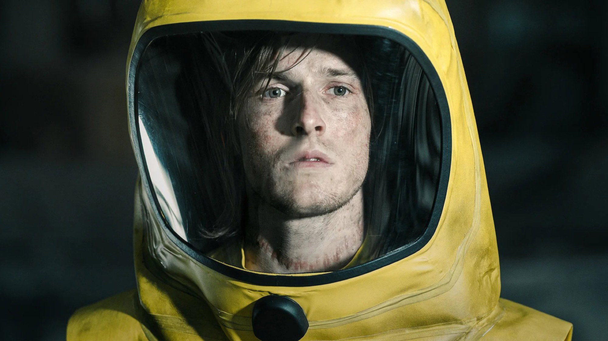
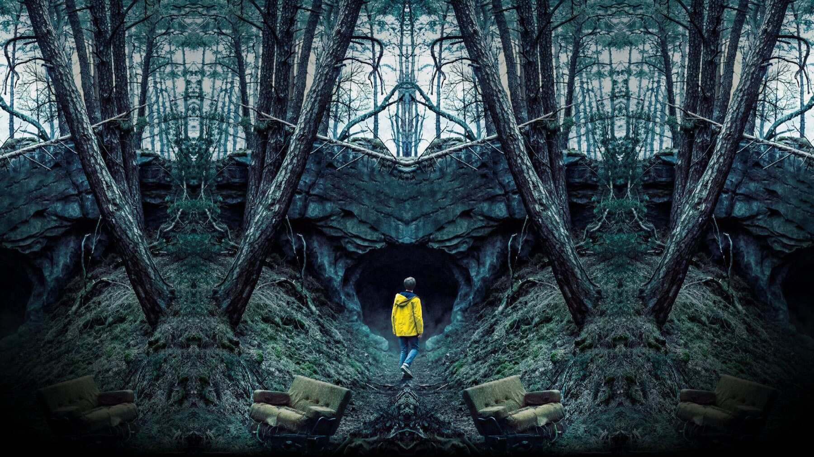
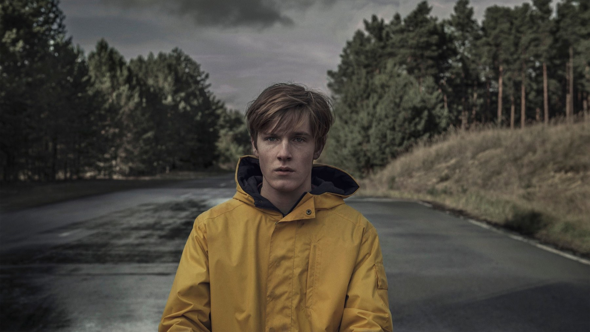
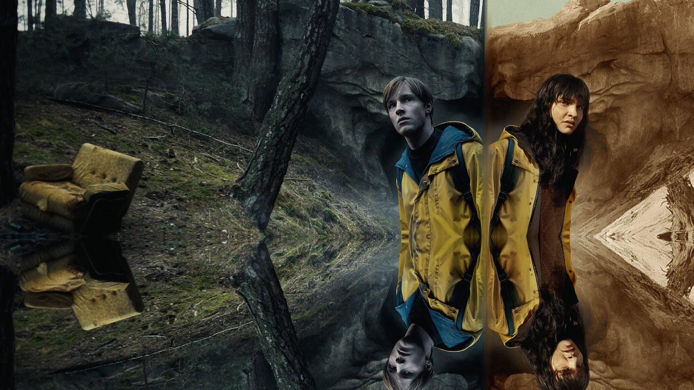
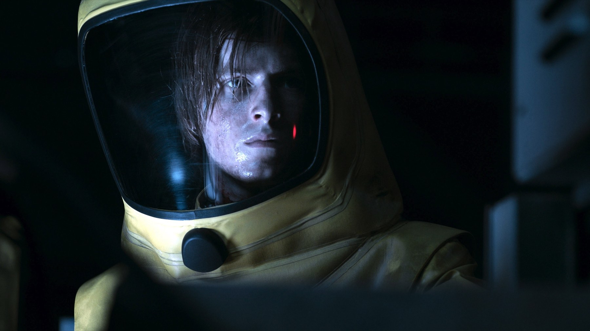

Dark, il finale spiegato (spoiler)
Tre mondi, un nodo e un padre che prova a salvare la sua famiglia: cosa succede davvero nell'ultimo episodio della serie tedesca di Netflix
Un uomo anziano e una donna dai capelli bianchi si fronteggiano in un mondo che sta per finire, e ciascuno ha già visto l'altro morire molte volte. Dark, la prima serie originale tedesca di Netflix, chiude le sue tre stagioni con una risposta alla domanda che regge tutto il racconto: da dove comincia davvero questa storia? Questa pagina spiega l'ultimo episodio e rivela chi si salva, quindi se non avete finito la serie fermatevi qui.
La serie in breve
Dark è stata creata da Baran bo Odar e Jantje Friese e prodotta da Wiedemann & Berg Television. Secondo Wikipedia, le riprese si sono svolte soprattutto a Berlino e nel Brandeburgo, con una fotografia in 4K. Su Netflix sono usciti 10 episodi il 1° dicembre 2017, 8 il 21 giugno 2019 e altri 8 il 27 giugno 2020: ventisei puntate in tutto, con Louis Hofmann nei panni di Jonas e Lisa Vicari in quelli di Martha. Nel 2021 la BBC l'ha messa al 58° posto tra le migliori serie del XXI secolo.

Il terzo mondo: cosa succede in Origin
Per due stagioni sembra che i mondi siano due: quello di Adam, che è Jonas diventato vecchio, e quello di Eva, che è Martha. Nella terza stagione si scopre che ne esiste un terzo, il mondo originale. Qui lo scienziato H.G. Tannhaus, dopo la morte della sua famiglia in un incidente stradale nel 1986, secondo Den of Geek, costruisce una macchina del tempo per riportarla indietro. Il tentativo fallisce e, invece di salvare i suoi cari, genera i due mondi paralleli in cui si svolge tutta la serie.
È il punto in cui il titolo prende un altro senso. Il male di Winden non nasce da una cattiveria: nasce dall'amore di un padre che non accetta la perdita. Il critico di Movieplayer lo sintetizza così: tutto comincia con un padre che prova a strappare la famiglia alla morte. La nostra lettura è che il finale ribalti la domanda della serie. Per tre stagioni ci si chiede chi sia colpevole; l'ultima risposta è che nessuno lo è, e che il dolore è la sola causa.
Il gesto di Jonas e Martha
Per spezzare il ciclo bisogna spezzare il nodo, cioè il punto in cui i due mondi si tengono a vicenda attraverso persone nate dai viaggi nel tempo. Jonas e Martha raggiungono il mondo Origin nel momento in cui il tempo si ferma durante l'Apocalisse e fanno in modo che l'incidente che sconvolge Tannhaus non avvenga. Senza quel dolore la macchina del tempo non viene costruita. Wikipedia riassume l'esito così: i due mondi vengono cancellati.
La conseguenza è radicale. Non muoiono solo Jonas e Martha: scompaiono, tenendosi per mano, come se non fossero mai esistiti. E con loro sparisce chiunque debba la nascita a un viaggio nel tempo. Il gesto d'amore dei due ragazzi è anche un suicidio dell'intera storia, ed è per questo che il finale lascia addosso una tristezza così dolce.

Chi resta a Winden
Secondo Den of Geek restano solo i personaggi che non nascono da paradossi temporali: Peter Doppler, Hannah Kahnwald, Katharina Nielsen, Benni e Torben Wöller. Li ritroviamo a una cena nella Winden di oggi, un luogo normale dove nessuno ricorda niente. Eppure qualcosa è rimasto: Hannah è incinta e, senza sapere perché, decide di chiamare il bambino Jonas. Per Movieplayer quel dettaglio e il lieve calo di luce durante la cena suggeriscono un ricordo che sopravvive ai mondi cancellati.
È la parte più discutibile, e quella che noi preferiamo. Gli autori non hanno scelto un lieto fine pieno, in cui tutto torna come prima, e nemmeno una cancellazione totale. Lasciano un nome, ovvero la traccia minima che serve a dire che quei due ragazzi sono esistiti. Nelle nostre ricerche non abbiamo trovato dichiarazioni di Baran bo Odar e Jantje Friese che spieghino la scena: questa è una lettura nostra, non degli autori.

Perché il finale funziona
Il merito di Dark è non aver sacrificato l'emozione alla struttura. Una serie costruita su alberi genealogici impossibili e salti di decenni avrebbe potuto chiudersi con un diagramma. Sceglie invece un'idea semplice, che chiunque può capire anche se si è perso nei dettagli: per rimediare a un dolore bisogna accettarlo. Tannhaus non voleva accettare la perdita, Jonas e Martha accettano di sparire. La differenza tra le due scelte è tutta qui.
Restano alcune ambiguità, e conviene dirlo. Il nodo è spiegato bene a parole, ma in schermo la sua meccanica richiede una seconda visione: il fatto che ogni personaggio nato dai viaggi nel tempo cancelli sé stesso crea qualche buco, che si può accettare solo come regola del racconto. Chi cerca una logica da orologeria perfetta può restarne deluso. Chi cerca il senso trova più di quanto ci si aspetti.

Dove vederla
In Italia, secondo TMDB a ottobre 2026, Dark è disponibile su Netflix, con tutte e tre le stagioni. Conviene riguardarla a partire dalla prima: molte scene del primo episodio, viste dopo il finale, cambiano completamente significato.
Il finale di Dark non spiega tutto, ma spiega la cosa che conta: da un lutto nasce un'intera storia, e solo accettandolo si può spezzare. Per noi è una chiusura più umana che geometrica, e proprio per questo funziona.
Domande frequenti
Cos'è il mondo Origin di Dark?
È il mondo da cui nasce tutto: qui lo scienziato H.G. Tannhaus costruisce una macchina del tempo per salvare la sua famiglia e, senza volerlo, genera i due mondi di Adam ed Eva.
Chi si salva alla fine di Dark?
Solo i personaggi che non devono la nascita a viaggi nel tempo, tra cui Hannah, Peter, Katharina, Benni e Torben, secondo Den of Geek.
Dove si vede Dark in Italia?
Secondo TMDB a ottobre 2026 le tre stagioni sono su Netflix.